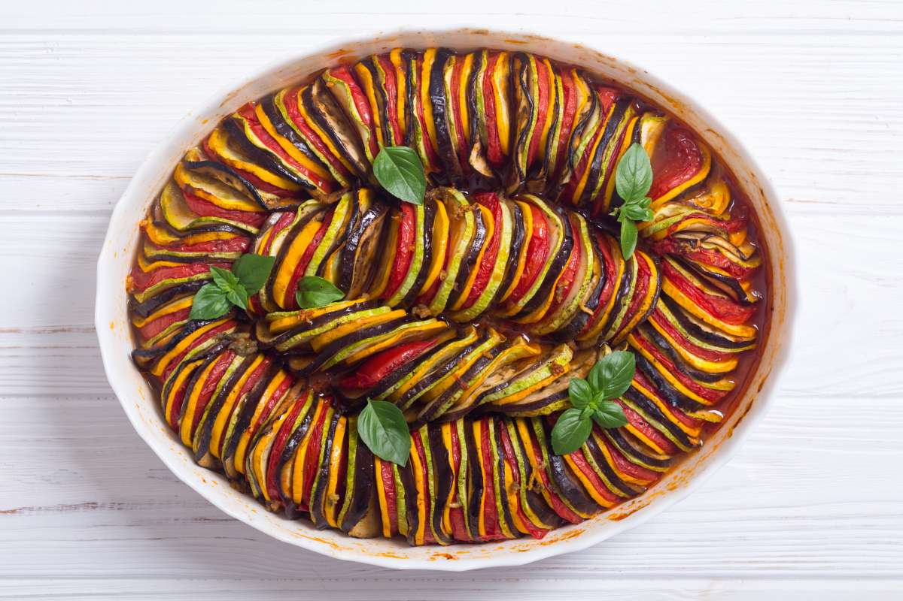

"An extraordinary meal from a singularly unexpected source. To say that both the meal and its maker have challenged my preconceptions about fine cooking is a gross understatement. They have rocked me to my core."
- Anton Ego, 2007
- Matthew, 1837
